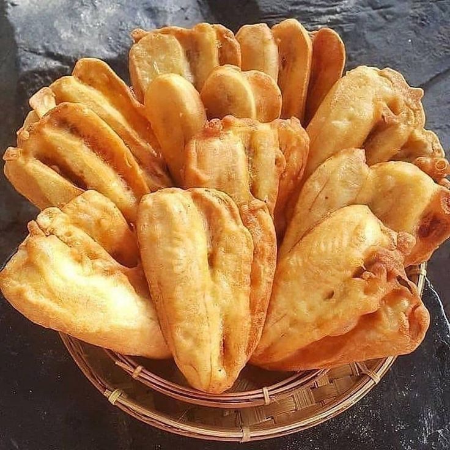

Pisang Goreng Recipes

Description
Make the most popular Indonesian snack with this pisang goreng recipe. Serve it hot and make extra. With this recipe, you always want more!
Ingredients
- 1 ¼ cups all-purpose flour
- 2 tablespoons granulated sugar
- ¼ tablespoon vanilla powder
- ½ cup milk
- 1 egg
- 2 tablespoons butter, melted
- 1 teaspoon rum flavoring
- 4 ripe bananas, sliced
- 2 cups oil for frying
Steps
-
Combine flour, sugar, and vanilla powder in a large bowl; make a well in the center. Pour milk, egg, melted butter, and rum flavoring into the well; mix until smooth. Fold in banana slices until evenly coated.
-
Heat oil in a wok or deep fryer to 375 degrees F (190 degrees C).
-
Drop banana mixture by tablespoon into hot oil. Fry in hot oil until golden brown and crispy, 10 to 15 minutes. Remove bananas from oil and drain them on paper towels. Serve hot.